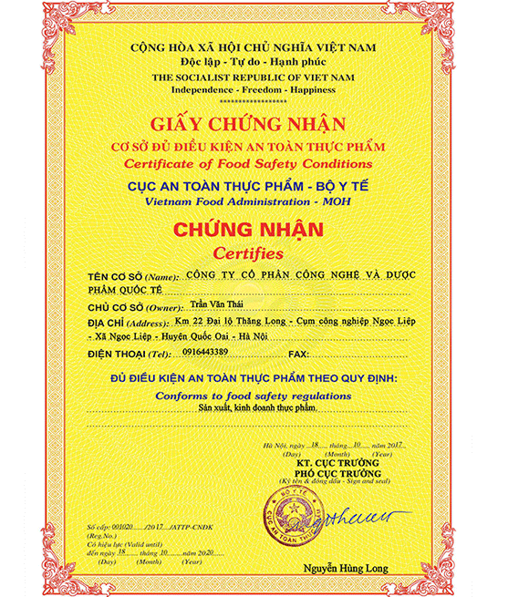
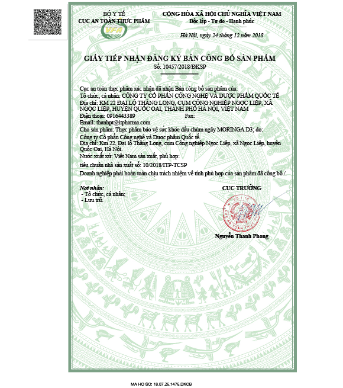

Hơn 20.000 bà mẹ Việt Nam tin dùng sản phẩm, bạn thì sao?

Thu Thanh - Ninh Bình
Nhìn con ăn ngon, phát triển toàn diện tôi rất mừng, cảm ơn sản phẩm đã cho tôi những ngày nhàn dỗi như thế.
Ngọc Thùy - Hà Nội
"Nhìn bé rút ngắn dần khoảng cách với các bạn cùng trang lứa tôi cảm thấy hạnh phúc vì những cố gắng của mình đã được bù đắp."

Bích Thảo - Bình Dương
Cảm ơn Dầu chùm ngây Moringa D3 đã đồng hành cùng tôi trong suốt quá trình nuôi con lớn. Bé được phát triển toàn diện mà tôi có thể yên tâm đi làm
Sản phẩm được cấp giấy phép lưu hành và giấy phép vệ sinh an toàn thực phẩm

